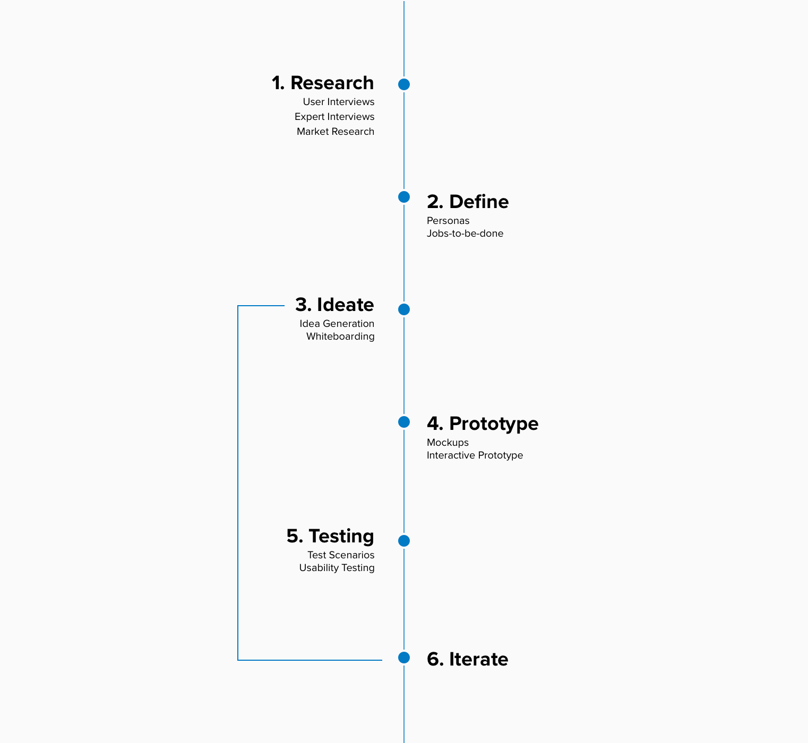
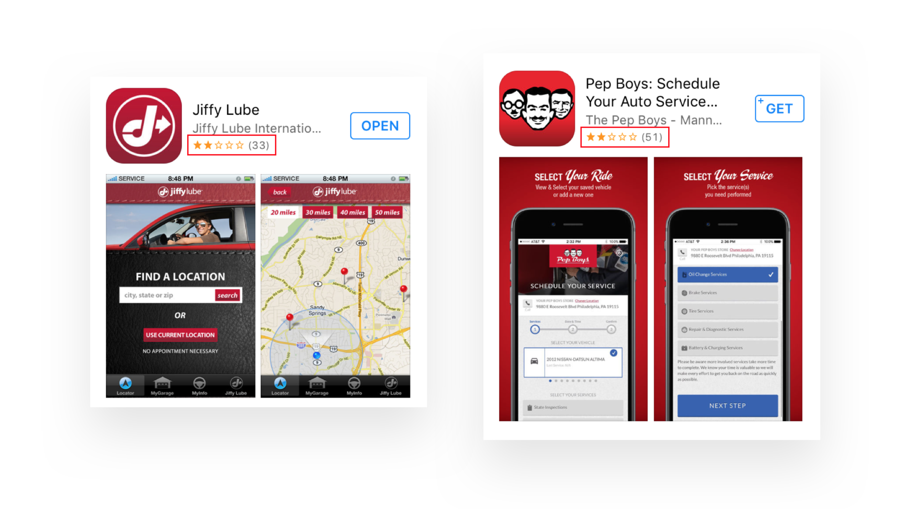
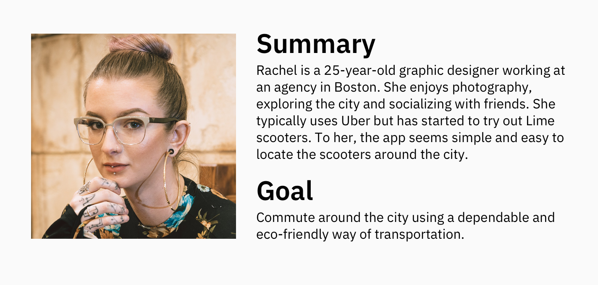
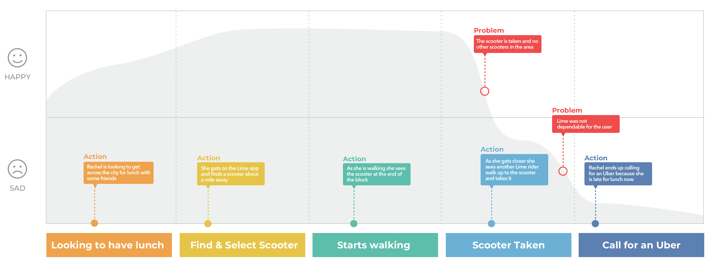
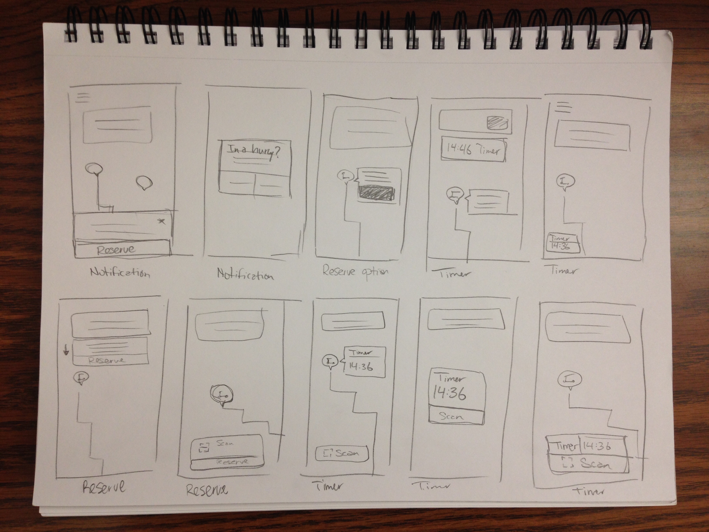
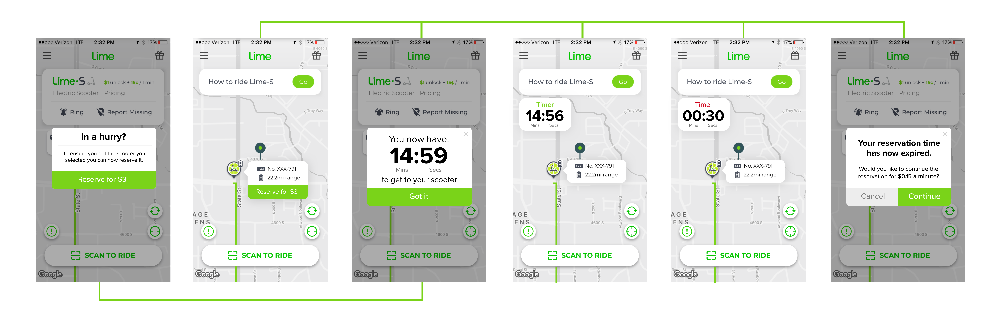
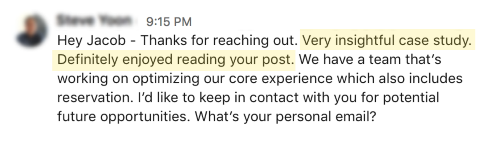

Auto Maintenance App
Project Scope:
- My Role: UX Design, Research
- Tools: Sketch, Adobe XD
- Timeline: Aug 2018 - Nov 2018
- Deliverables: Sketches, interactive XD prototype, research findings
- Team: Jacob Ottesen & Nathan Jones
The Problem
- Auto maintenance chains struggle with customer retention
- Consumer often forget when to get important maintenance done
The Solution
A mobile application that connects to an ODB2 scanner which retrieves data from the consumer’s car. This data is translated into reminders and alerts for maintenance through push notifications. The application connects consumers needs to auto maintenance businesses by offering rewards for prompt scheduling and completion of maintenance.
My Approach
Research
User Interviews
By performing user interviews with 15 people, we found out some of the pain points of that consumers face when they need maintenance done:
- Hassle-Free and Quick Scheduling — Aka Get it done quick.
Users don’t like to call around to schedule auto maintenance, they desire to have a hassle-free intuitive way to schedule maintenance. - Forgetful Car Owners —Aka When did I get my last oil change?
Users find it hard to remember when the last time they had specific maintenance done on their vehicle. - Current solutions aren’t working — Aka The competition sucks.
The two main solutions are window stickers and emails. Some people don’t like stickers on their window shield and other don’t look at their email enough. - Taking care of investments — Aka I want my car to last for a long time.
The frugal group of users wants to make sure that their long-term auto investment will last as long as possible.
Expert Interviews
We also performed interviews with auto maintenance experts to understand more. We learned that the only motivation keeping customer retention is customer service, window stickers and emails.
Market Research
As you can see here, the market does currently have apps that attempt to fulfill consumer needs. But their ratings show that consumers are not happy and as a result, do not use them.
Define
Based on the customer interviews I had, I built a persona & journey map to refer back to throughout my process.
 Ideate
To start the ideation process, we wrote down all the ideas we could think of. This helped us to not narrow down to the first idea we could think of. Here are some of those ideas:
Idea Generation
- Chat bot connected to maintenance chain (ask it questions, maintenance reminders)
- Text messaging reminders from maintenance chain
- Scheduling on mobile device
- Maintenance reminder dashboard
- Incentives? 30% off if scheduled in 3 days?
- Coupons?
- Rewards systems
- Saved money offer time
- Car Alerts with recommendations
- Level of severity for alerts
Potential feature solution: When Lime riders reach a certain distance from the scooter selected, the app will give them an option to reserve the scooter for a certain price.
Why this idea?
To me I feel like there are a few main value propositions for the business and the end customer:
- Customer trust — with the ability to guarantee an available scooter, Lime riders will trust the service as a dependable way of transportation.
- Profit maximization — through unused scooters being reserved for a price, the business will increase revenue.
- Product differentiation — through creating a more reliable form of transportation this feature will help separate Lime from other scooter competitors such as Bird or Spin.
Storyboarding

Things I considered:
- What is a fair price?
- How close is a fair distance for reserving a scooter?
- Will the reservation price still help the business make money?
- Are riders willing to pay the extra fee to reserve the scooter?
Reservations - Pricing breakdown
Currently, Lime scooters cost $1.00 to unlock and $0.15 a minute to continue riding. If the rider can reserve the scooter from 0.5 miles away then the price of the reservation depends on how long it takes for the rider to get to the scooter. If the average rider takes 15 mins to walk 0.5 to the scooter than that would cost 15 mins * $0.15 = $2.25. Therefore, a fair price for a reservation could be $3.00. That way the business would make an extra $0.75 per reservation.
Sketching
I explored potential ways to design this solution into Lime's current flow.
Testing with users
Once I explored different ideas I wanted to test this idea with Lime customers. I did some qualitative testing with a few screens to test some variations. I then mocked up screens in Sketch to built my prototype in XD. I conducted usability tests with 6 Lime customers.
Research Findings:
- Users understand why there was a required time to get to the scooter
- Users want this feature to be optional
- Users felt 15-minutes was enough time to get to the scooter
- Users want to know they have a 15 minute time limit on the reservation
Iterate
To help users be aware of the time limit on the reservation feature, I added a first-time feature interaction. This would allow the user to explore the reservation feature for the first time without committing to it.

After the user has interacted with the feature for the first time the app will just give the option to reserve for $3.
I added a way for users to turn on/off this feature in the settings page.
My Successes
After working on this case study I sent my work over to a senior designer at Lime and this is the reply I received:
Lessons Learned:
- Understanding the users and problem deeply in the beginning of a project can go a long way
- If you have an idea make sure you can talk about the why of the business
- I found it helpful to write down "things to consider" when deciding on a potential solution